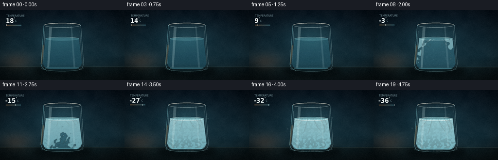
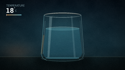
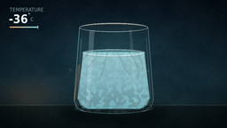
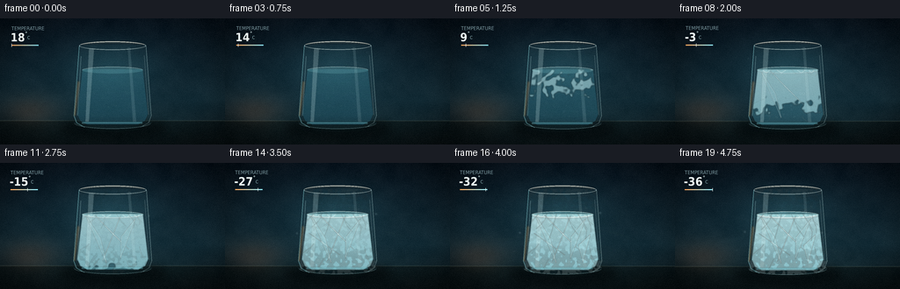
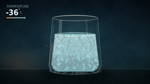
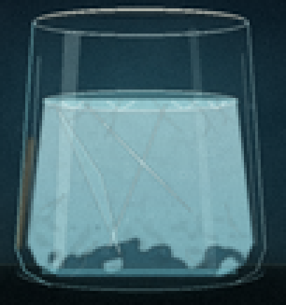
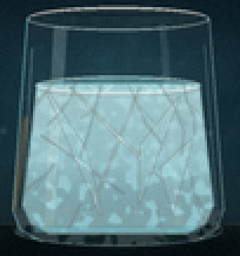

CODING AGENTS AS PIXEL WORLD MODELS
traex/DeepSeek-V4.1-Flash · phygen_091
点击播放 · 原生 RGB 像素
逐轮保存的候选
回放视频、检查图与代码变化。
每份候选均可单独播放。实际图片检查记录在下方工具轨迹中。
候选 01播放与检查图
点击播放 · 原生 RGB 像素

展开代码变化
--- 上一保存版本
+++ 本次保存版本
@@ -0,0 +1,408 @@
+from pathlib import Path
+
+import numpy as np
+from PIL import Image, ImageDraw, ImageFilter, ImageFont
+
+import artifact_io
+
+
+W, H = 256, 144
+N, FPS = 20, 4.0
+SS = 4
+SW, SH = W * SS, H * SS
+CASE_DIR = Path(__file__).resolve().parent
+
+
+def sc(value):
+ return int(round(value * SS))
+
+
+def box(values):
+ return tuple(sc(value) for value in values)
+
+
+def smoothstep(edge0, edge1, value):
+ x = np.clip((value - edge0) / (edge1 - edge0), 0.0, 1.0)
+ return x * x * (3.0 - 2.0 * x)
+
+
+def mix(a, b, amount):
+ return tuple(int(round(a[i] + (b[i] - a[i]) * amount)) for i in range(3))
+
+
+def noise_array(seed, small=(26, 15)):
+ rng = np.random.default_rng(seed)
+ data = rng.integers(0, 256, size=(small[1], small[0]), dtype=np.uint8)
+ image = Image.fromarray(data, "L").resize((SW, SH), Image.Resampling.BICUBIC)
+ return np.asarray(image, dtype=np.float32) / 255.0
+
+
+NOISE_A = noise_array(19, (20, 12))
+NOISE_B = noise_array(47, (54, 30))
+NOISE_C = noise_array(83, (92, 52))
+
+
+def mask_from_draw(draw_function):
+ mask = Image.new("L", (SW, SH), 0)
+ draw_function(ImageDraw.Draw(mask))
+ return mask
+
+
+def gradient_image(top, bottom, alpha_top=255, alpha_bottom=255):
+ y = np.linspace(0.0, 1.0, SH, dtype=np.float32)[:, None]
+ rgb = np.empty((SH, SW, 3), dtype=np.float32)
+ for channel in range(3):
+ rgb[:, :, channel] = top[channel] + (bottom[channel] - top[channel]) * y
+ alpha = alpha_top + (alpha_bottom - alpha_top) * y
+ rgba = np.empty((SH, SW, 4), dtype=np.uint8)
+ rgba[:, :, :3] = np.clip(rgb, 0, 255).astype(np.uint8)
+ rgba[:, :, 3] = np.clip(alpha, 0, 255).astype(np.uint8)
+ return Image.fromarray(rgba, "RGBA")
+
+
+def fill_with_gradient(base, mask, top, bottom, alpha_top=255, alpha_bottom=255):
+ layer = gradient_image(top, bottom, alpha_top, alpha_bottom)
+ base.alpha_composite(Image.composite(layer, Image.new("RGBA", base.size), mask))
+
+
+def tint_mask(base, mask, color, alpha):
+ layer = Image.new("RGBA", base.size, color + (int(alpha),))
+ base.alpha_composite(Image.composite(layer, Image.new("RGBA", base.size), mask))
+
+
+def make_background(t):
+ y, x = np.mgrid[0:SH, 0:SW].astype(np.float32)
+ xn = x / (SW - 1)
+ yn = y / (SH - 1)
+
+ top = np.array([8, 18, 27], dtype=np.float32)
+ middle = np.array([19, 43, 53], dtype=np.float32)
+ bottom = np.array([12, 24, 29], dtype=np.float32)
+ blend = np.clip(yn / 0.64, 0, 1)[..., None]
+ upper = top + (middle - top) * blend
+ lower = middle + (bottom - middle) * np.clip((yn - 0.64) / 0.36, 0, 1)[..., None]
+ rgb = np.where((yn < 0.64)[..., None], upper, lower)
+
+ cool_glow = np.exp(-(((xn - 0.49) / 0.35) ** 2 + ((yn - 0.38) / 0.34) ** 2) * 2.6)
+ warm_glow = np.exp(-(((xn - 0.13) / 0.22) ** 2 + ((yn - 0.73) / 0.23) ** 2) * 3.3)
+ table_glow = np.exp(-(((yn - 0.82) / 0.10) ** 2)) * np.exp(-(((xn - 0.48) / 0.45) ** 2) * 2)
+ rgb += cool_glow[..., None] * np.array([10, 24, 27], dtype=np.float32)
+ rgb += warm_glow[..., None] * np.array([29, 12, 3], dtype=np.float32)
+ rgb += table_glow[..., None] * np.array([7, 12, 12], dtype=np.float32)
+
+ texture = (NOISE_A - 0.5) * 5.0 + (NOISE_B - 0.5) * 2.0
+ rgb += texture[..., None]
+ vignette = np.clip(1.25 - 0.55 * (((xn - 0.5) * 1.75) ** 2 + ((yn - 0.5) * 1.35) ** 2), 0.68, 1.0)
+ rgb *= vignette[..., None]
+
+ # A restrained tabletop gives the glass weight without competing with it.
+ table = yn > 0.812
+ edge = np.exp(-((yn - 0.812) / 0.004) ** 2)
+ rgb[table] *= np.array([0.72, 0.70, 0.66], dtype=np.float32)
+ rgb += edge[..., None] * np.array([22, 22, 18], dtype=np.float32)
+
+ canvas = Image.fromarray(np.clip(rgb, 0, 255).astype(np.uint8), "RGB").convert("RGBA")
+
+ # Soft pool of reflected light beneath the tumbler.
+ shadow = Image.new("RGBA", (SW, SH), (0, 0, 0, 0))
+ sd = ImageDraw.Draw(shadow)
+ sd.ellipse(box((68, 115, 188, 137)), fill=(2, 8, 10, 180))
+ shadow = shadow.filter(ImageFilter.GaussianBlur(sc(5.0)))
+ canvas.alpha_composite(shadow)
+ reflection = Image.new("RGBA", (SW, SH), (0, 0, 0, 0))
+ rd = ImageDraw.Draw(reflection)
+ rd.ellipse(box((95, 119, 162, 128)), fill=(58, 129, 141, 26))
+ reflection = reflection.filter(ImageFilter.GaussianBlur(sc(3.2)))
+ canvas.alpha_composite(reflection)
+ return canvas
+
+
+def draw_cold_mist(canvas, t):
+ strength = float(smoothstep(0.16, 0.95, t))
+ if strength <= 0:
+ return
+
+ layer = Image.new("RGBA", (SW, SH), (0, 0, 0, 0))
+ draw = ImageDraw.Draw(layer)
+ phase = t * 5.6
+ for index in range(7):
+ y0 = 47 + index * 11
+ points = []
+ for step in range(42):
+ u = step / 41
+ x = 50 + 163 * u
+ wave = 5.0 * np.sin(u * 5.2 + phase + index * 0.91)
+ wave += 2.2 * np.sin(u * 12.0 - phase * 0.7 + index * 1.7)
+ y = y0 + wave + 5.5 * u
+ points.append((sc(x), sc(y)))
+ alpha = int((8 + 9 * strength) * (0.62 + 0.38 * np.sin(index * 1.7) ** 2))
+ draw.line(points, fill=(161, 218, 225, alpha), width=sc(1.6 + 0.8 * strength))
+ layer = layer.filter(ImageFilter.GaussianBlur(sc(2.2)))
+ canvas.alpha_composite(layer)
+
+ wisps = Image.new("RGBA", (SW, SH), (0, 0, 0, 0))
+ wd = ImageDraw.Draw(wisps)
+ rng = np.random.default_rng(121)
+ for index in range(22):
+ base_x = 66 + 124 * rng.random()
+ base_y = 44 + 76 * rng.random()
+ drift = (t * (8 + 5 * rng.random()) + index * 1.7) % 24
+ x = base_x + 4 * np.sin(index * 1.9 + t * 7)
+ y = base_y - drift
+ if y < 31:
+ y += 78
+ radius = 0.55 + 1.1 * rng.random()
+ alpha = int((20 + 36 * strength) * (0.45 + 0.55 * rng.random()))
+ wd.ellipse(box((x - radius, y - radius, x + radius, y + radius)), fill=(194, 235, 239, alpha))
+ wisps = wisps.filter(ImageFilter.GaussianBlur(sc(0.7)))
+ canvas.alpha_composite(wisps)
+
+
+def outer_glass_mask():
+ def shape(draw):
+ draw.polygon(
+ [(sc(90), sc(30)), (sc(166), sc(30)), (sc(172), sc(111)),
+ (sc(169), sc(119)), (sc(160), sc(124)), (sc(96), sc(124)),
+ (sc(87), sc(119)), (sc(84), sc(111))],
+ fill=255,
+ )
+ draw.ellipse(box((84, 112, 172, 126)), fill=255)
+
+ return mask_from_draw(shape)
+
+
+def water_mask():
+ def shape(draw):
+ draw.polygon(
+ [(sc(94), sc(58)), (sc(162), sc(58)), (sc(168), sc(109)),
+ (sc(165), sc(116)), (sc(157), sc(121)), (sc(99), sc(121)),
+ (sc(91), sc(116)), (sc(88), sc(109))],
+ fill=255,
+ )
+ draw.ellipse(box((91, 111, 165, 121)), fill=255)
+
+ return mask_from_draw(shape)
+
+
+def make_ice_mask(water, freeze):
+ if freeze <= 0.001:
+ return Image.new("L", (SW, SH), 0)
+ y, x = np.mgrid[0:SH, 0:SW].astype(np.float32)
+ xn = x / (SW - 1)
+ yn = y / (SH - 1)
+ left, right = 0.34, 0.67
+ top, bottom = 0.39, 0.84
+ edge_distance = np.minimum((xn - left) / (right - left), (right - xn) / (right - left))
+ depth = np.clip((yn - top) / (bottom - top), 0.0, 1.0)
+ edge_score = np.clip(1.0 - edge_distance * 1.55, 0.0, 1.0)
+ score = 0.66 * edge_score + 0.46 * (1.0 - depth)
+ score += 0.25 * NOISE_B + 0.09 * NOISE_C
+ score += 0.035 * np.sin((xn * 83.0 + yn * 31.0) + NOISE_A * 12.0)
+ threshold = 1.30 - 1.44 * freeze
+ field = np.clip((score - threshold) / 0.075, 0.0, 1.0)
+ mask = (field * (np.asarray(water, dtype=np.float32) / 255.0) * 255).astype(np.uint8)
+ ice = Image.fromarray(mask, "L").filter(ImageFilter.GaussianBlur(sc(0.42)))
+ return ice
+
+
+def draw_ice_crystals(layer, freeze, water):
+ if freeze <= 0.02:
+ return
+ draw = ImageDraw.Draw(layer)
+ rng = np.random.default_rng(303)
+ opacity = int(35 + 150 * freeze)
+
+ starts = [(101, 58), (110, 58), (121, 58), (132, 58), (145, 58), (155, 58),
+ (93, 73), (91, 88), (163, 72), (166, 89)]
+ for index, (sx, sy) in enumerate(starts):
+ length = (12 + 20 * rng.random()) * freeze
+ points = [(sc(sx), sc(sy))]
+ x, y = sx, sy
+ side = -1 if sx < 128 else 1
+ for step in range(3):
+ x += side * (1.2 + 2.1 * rng.random()) * (0.7 + freeze)
+ y += length / 3
+ x += rng.normal(0, 1.5)
+ points.append((sc(x), sc(y)))
+ draw.line(points, fill=(215, 246, 247, opacity), width=max(1, sc(0.55)), joint="curve")
+ if freeze > 0.30:
+ bx, by = points[1]
+ branch = (bx + sc((3 + 6 * rng.random()) * side), by + sc(4 + 5 * rng.random()))
+ draw.line([(bx, by), branch], fill=(207, 240, 243, int(opacity * 0.72)), width=1)
+ return layer
+
+
+def draw_glass(canvas, t):
+ outer = outer_glass_mask()
+ water = water_mask()
+ freeze = float(smoothstep(0.18, 0.96, t) ** 0.92)
+
+ # Back wall and body: just enough blue transmission to read as glass.
+ fill_with_gradient(canvas, outer, (119, 183, 194), (52, 112, 128), 14, 26)
+
+ water_top = mix((71, 151, 166), (164, 214, 221), 0.76 * freeze)
+ water_bottom = mix((25, 77, 100), (95, 166, 181), 0.72 * freeze)
+ fill_with_gradient(canvas, water, water_top, water_bottom, int(88 + 67 * freeze), int(118 + 60 * freeze))
+
+ # Ice is laid in as a noisy field, so the frozen front feels granular rather than geometric.
+ ice = make_ice_mask(water, freeze)
+ if freeze > 0:
+ fill_with_gradient(canvas, ice, (202, 234, 236), (122, 189, 201), int(130 + 65 * freeze), int(150 + 45 * freeze))
+
+ # Refracted bands and highlights make the clear-water stage legible.
+ detail = Image.new("RGBA", (SW, SH), (0, 0, 0, 0))
+ dd = ImageDraw.Draw(detail)
+ dd.polygon(
+ [(sc(101), sc(34)), (sc(107), sc(34)), (sc(101), sc(118)),
+ (sc(97), sc(118))],
+ fill=(222, 248, 247, 54),
+ )
+ dd.polygon(
+ [(sc(145), sc(33)), (sc(148), sc(33)), (sc(155), sc(118)),
+ (sc(151), sc(118))],
+ fill=(218, 247, 249, 28),
+ )
+ dd.line([(sc(92), sc(43)), (sc(88), sc(111))], fill=(184, 230, 235, 83), width=sc(0.9))
+ dd.line([(sc(164), sc(42)), (sc(169), sc(110))], fill=(218, 249, 250, 74), width=sc(0.75))
+ detail = detail.filter(ImageFilter.GaussianBlur(sc(0.35)))
+ detail.putalpha(Image.composite(detail.getchannel("A"), Image.new("L", (SW, SH), 0), outer))
+ canvas.alpha_composite(detail)
+
+ # Meniscus and a thin, bright top rim.
+ surface = Image.new("RGBA", (SW, SH), (0, 0, 0, 0))
+ sd = ImageDraw.Draw(surface)
+ sd.ellipse(box((93, 55, 163, 63)), fill=(144, 219, 225, int(46 + 50 * freeze)))
+ sd.arc(box((93, 55, 163, 63)), 190, 350, fill=(222, 250, 249, int(150 + 80 * freeze)), width=sc(0.7))
+ if freeze > 0.08:
+ crust_alpha = int(185 * freeze)
+ sd.arc(box((94, 55, 162, 63)), 8, 172, fill=(235, 250, 249, crust_alpha), width=sc(0.8 + 0.7 * freeze))
+ for x0, x1 in [(100, 108), (116, 126), (139, 148), (152, 158)]:
+ sd.line([(sc(x0), sc(59)), (sc((x0 + x1) / 2), sc(62)), (sc(x1), sc(59))],
+ fill=(229, 248, 247, int(100 + 100 * freeze)), width=sc(0.55))
+ surface = surface.filter(ImageFilter.GaussianBlur(sc(0.22)))
+ canvas.alpha_composite(surface)
+
+ crystal_layer = Image.new("RGBA", (SW, SH), (0, 0, 0, 0))
+ draw_ice_crystals(crystal_layer, freeze, water)
+ crystal_layer.putalpha(Image.composite(crystal_layer.getchannel("A"), Image.new("L", (SW, SH), 0), water))
+ crystal_layer = crystal_layer.filter(ImageFilter.GaussianBlur(sc(0.20)))
+ canvas.alpha_composite(crystal_layer)
+
+ # Trapped air is initially sparse, then becomes visible in the cloudy ice.
+ bubbles = Image.new("RGBA", (SW, SH), (0, 0, 0, 0))
+ bd = ImageDraw.Draw(bubbles)
+ rng = np.random.default_rng(808)
+ for index in range(24):
+ x = 97 + 62 * rng.random()
+ y = 67 + 49 * rng.random()
+ radius = 0.45 + 1.0 * rng.random()
+ alpha = int((22 + 82 * freeze) * (0.5 + 0.5 * rng.random()))
+ bd.ellipse(box((x - radius, y - radius, x + radius, y + radius)),
+ outline=(226, 249, 249, alpha), width=1)
+ bubbles.putalpha(Image.composite(bubbles.getchannel("A"), Image.new("L", (SW, SH), 0), water))
+ canvas.alpha_composite(bubbles)
+
+ # External frost: fine crystals creep inward from the rim and the sides.
+ if freeze > 0.18:
+ frost_strength = float(smoothstep(0.18, 1.0, freeze))
+ frost_field = np.clip((NOISE_C - (0.78 - 0.42 * frost_strength)) * 5.5, 0, 1)
+ y = np.arange(SH, dtype=np.float32)[:, None] / (SH - 1)
+ vertical = np.clip((0.30 - y) / 0.24, 0, 1) + np.clip((y - 0.64) / 0.22, 0, 1)
+ frost_field *= np.clip(vertical * 1.15 + 0.18, 0, 1)
+ frost_alpha = (frost_field * 80 * frost_strength).astype(np.uint8)
+ frost_mask = Image.fromarray(np.minimum(frost_alpha, np.asarray(outer)).astype(np.uint8), "L")
+ frost_mask = frost_mask.filter(ImageFilter.GaussianBlur(sc(0.28)))
+ tint_mask(canvas, frost_mask, (215, 241, 242), 210)
+
+ # Crisp silhouette, asymmetric lighting, and a thick base.
+ outline = Image.new("RGBA", (SW, SH), (0, 0, 0, 0))
+ od = ImageDraw.Draw(outline)
+ od.line([(sc(90), sc(31)), (sc(84), sc(111)), (sc(87), sc(119)), (sc(96), sc(124))],
+ fill=(138, 213, 221, 155), width=sc(0.9))
+ od.line([(sc(166), sc(31)), (sc(172), sc(111)), (sc(169), sc(119)), (sc(160), sc(124))],
+ fill=(191, 235, 239, 148), width=sc(0.85))
+ od.arc(box((84, 112, 172, 126)), 8, 172, fill=(177, 230, 234, 118), width=sc(0.8))
+ od.ellipse(box((90, 26, 166, 36)), outline=(218, 245, 245, 166), width=sc(1.0))
+ od.arc(box((90, 26, 166, 36)), 198, 342, fill=(250, 250, 235, 215), width=sc(1.15))
+ od.arc(box((93, 28, 163, 34)), 198, 342, fill=(255, 237, 195, 90), width=sc(0.55))
+ od.line([(sc(93), sc(119)), (sc(162), sc(119))], fill=(112, 191, 203, 96), width=sc(2.4))
+ outline = outline.filter(ImageFilter.GaussianBlur(sc(0.18)))
+ canvas.alpha_composite(outline)
+
+ # A small amber caustic on the left keeps the palette from becoming monochrome.
+ warm = Image.new("RGBA", (SW, SH), (0, 0, 0, 0))
+ wd = ImageDraw.Draw(warm)
+ wd.polygon(
+ [(sc(88), sc(71)), (sc(91), sc(72)), (sc(86), sc(112)), (sc(83), sc(111))],
+ fill=(255, 181, 102, 72),
+ )
+ warm = warm.filter(ImageFilter.GaussianBlur(sc(1.1)))
+ warm.putalpha(Image.composite(warm.getchannel("A"), Image.new("L", (SW, SH), 0), outer))
+ canvas.alpha_composite(warm)
+ return freeze
+
+
+def draw_temperature(canvas, t):
+ small_path = "/usr/share/fonts/truetype/dejavu/DejaVuSansCondensed.ttf"
+ bold_path = "/usr/share/fonts/truetype/dejavu/DejaVuSansCondensed-Bold.ttf"
+ small = ImageFont.truetype(small_path, sc(5.7))
+ large = ImageFont.truetype(bold_path, sc(13.0))
+ tiny = ImageFont.truetype(small_path, sc(5.0))
+ draw = ImageDraw.Draw(canvas)
+
+ temp = 18.0 - 54.0 * float(smoothstep(0.0, 1.0, t))
+ draw.text((sc(13), sc(8)), "TEMPERATURE", font=small, fill=(146, 177, 184, 170), anchor="la")
+ draw.text((sc(12), sc(14)), f"{round(temp):d}", font=large, fill=(239, 248, 246, 235), anchor="la")
+ number_width = draw.textlength(f"{round(temp):d}", font=large)
+ degree_x = sc(12) + number_width + sc(0.8)
+ draw.ellipse((degree_x, sc(15.1), degree_x + sc(1.5), sc(16.6)),
+ outline=(218, 241, 240, 220), width=sc(0.38))
+ draw.text((degree_x + sc(2.1), sc(19.0)), "C", font=tiny, fill=(171, 211, 216, 185), anchor="la")
+
+ # The mini scale is a compact visual cue for the rapid cooling.
+ x0, y0 = sc(13), sc(30)
+ width = sc(31)
+ for px in range(width):
+ u = px / max(1, width - 1)
+ color = mix((229, 153, 86), (127, 213, 231), u)
+ draw.line([(x0 + px, y0), (x0 + px, y0 + sc(1.25))], fill=color + (150,))
+ marker = x0 + int(width * float(smoothstep(0, 1, t)))
+ draw.line([(marker, y0 - sc(1.2)), (marker, y0 + sc(2.6))], fill=(245, 250, 244, 230), width=sc(0.55))
+
+
+def render_frame(index):
+ t = index / (N - 1)
+ canvas = make_background(t)
+ draw_cold_mist(canvas, t)
+ draw_glass(canvas, t)
+ draw_temperature(canvas, t)
+
+ # Gentle cool bloom above the tumbler.
+ glow = Image.new("RGBA", (SW, SH), (0, 0, 0, 0))
+ gd = ImageDraw.Draw(glow)
+ gd.ellipse(box((101, 39, 158, 82)), fill=(142, 225, 230, int(5 + 8 * t)))
+ glow = glow.filter(ImageFilter.GaussianBlur(sc(10.0)))
+ canvas.alpha_composite(glow)
+
+ # A barely perceptible push-in keeps the timelapse from feeling like a slideshow.
+ zoom = 1.0 + 0.018 * t
+ crop_w, crop_h = int(SW / zoom), int(SH / zoom)
+ left = (SW - crop_w) // 2
+ top = (SH - crop_h) // 2 - int(sc(0.4) * t)
+ canvas = canvas.crop((left, top, left + crop_w, top + crop_h)).resize((W, H), Image.Resampling.LANCZOS)
+
+ frame = np.asarray(canvas.convert("RGB"), dtype=np.float32)
+ rng = np.random.default_rng(9000 + index)
+ grain = rng.normal(0.0, 1.45, size=(H, W, 1)).astype(np.float32)
+ frame += grain
+ return np.clip(frame, 0, 255).astype(np.uint8)
+
+
+def main():
+ frames = np.stack([render_frame(index) for index in range(N)], axis=0)
+ artifact_io.save(frames, CASE_DIR)
+ print(f"wrote {N} frames to {CASE_DIR}")
+
+
+if __name__ == "__main__":
+ main()
候选 02播放与检查图
点击播放 · 原生 RGB 像素
展开代码变化
--- 上一保存版本
+++ 本次保存版本
@@ -190,19 +190,47 @@
y, x = np.mgrid[0:SH, 0:SW].astype(np.float32)
xn = x / (SW - 1)
yn = y / (SH - 1)
- left, right = 0.34, 0.67
- top, bottom = 0.39, 0.84
+ left, right = 0.33, 0.68
+ top, bottom = 0.385, 0.855
+ cx, cy = 0.50, 0.57
edge_distance = np.minimum((xn - left) / (right - left), (right - xn) / (right - left))
depth = np.clip((yn - top) / (bottom - top), 0.0, 1.0)
- edge_score = np.clip(1.0 - edge_distance * 1.55, 0.0, 1.0)
- score = 0.66 * edge_score + 0.46 * (1.0 - depth)
- score += 0.25 * NOISE_B + 0.09 * NOISE_C
- score += 0.035 * np.sin((xn * 83.0 + yn * 31.0) + NOISE_A * 12.0)
- threshold = 1.30 - 1.44 * freeze
- field = np.clip((score - threshold) / 0.075, 0.0, 1.0)
+ edge_score = np.clip(1.0 - edge_distance * 1.35, 0.0, 1.0)
+ core_distance = np.sqrt(((xn - cx) / 0.23) ** 2 + ((yn - cy) / 0.29) ** 2)
+ core_score = np.clip(1.0 - core_distance, 0.0, 1.0)
+ score = 0.52 * edge_score + 0.50 * (1.0 - depth) + 0.56 * core_score
+ score += 0.26 * NOISE_B + 0.12 * NOISE_C
+ score += 0.045 * np.sin((xn * 93.0 + yn * 37.0) + NOISE_A * 13.0)
+ threshold = 1.25 - 1.43 * freeze
+ field = np.clip((score - threshold) / 0.065, 0.0, 1.0)
mask = (field * (np.asarray(water, dtype=np.float32) / 255.0) * 255).astype(np.uint8)
ice = Image.fromarray(mask, "L").filter(ImageFilter.GaussianBlur(sc(0.42)))
return ice
+
+
+def draw_ice_planes(layer, freeze, water):
+ if freeze <= 0.10:
+ return layer
+ rng = np.random.default_rng(516)
+ draw = ImageDraw.Draw(layer)
+ opacity = int(28 + 128 * freeze)
+ planes = [
+ [(98, 61), (114, 85), (121, 113)],
+ [(108, 60), (126, 79), (146, 98)],
+ [(136, 60), (126, 87), (116, 111)],
+ [(153, 63), (138, 84), (137, 108)],
+ [(96, 79), (112, 91), (131, 104)],
+ [(160, 81), (145, 94), (151, 112)],
+ ]
+ visible = 1 + int(np.floor(freeze * (len(planes) - 0.01)))
+ for index, polygon in enumerate(planes[:visible]):
+ jitter = rng.normal(0, 0.35, size=(len(polygon), 2))
+ pts = [(sc(x + jitter[i, 0]), sc(y + jitter[i, 1])) for i, (x, y) in enumerate(polygon)]
+ fill_alpha = int(opacity * (0.34 + 0.13 * (index % 3)))
+ draw.polygon(pts, fill=(173, 224, 230, fill_alpha))
+ draw.line(pts + [pts[0]], fill=(226, 249, 249, min(230, opacity + 70)),
+ width=max(1, sc(0.38)))
+ return layer
def draw_ice_crystals(layer, freeze, water):
@@ -213,7 +241,8 @@
opacity = int(35 + 150 * freeze)
starts = [(101, 58), (110, 58), (121, 58), (132, 58), (145, 58), (155, 58),
- (93, 73), (91, 88), (163, 72), (166, 89)]
+ (93, 73), (91, 88), (163, 72), (166, 89),
+ (101, 92), (158, 95), (112, 109), (144, 111)]
for index, (sx, sy) in enumerate(starts):
length = (12 + 20 * rng.random()) * freeze
points = [(sc(sx), sc(sy))]
@@ -240,14 +269,14 @@
# Back wall and body: just enough blue transmission to read as glass.
fill_with_gradient(canvas, outer, (119, 183, 194), (52, 112, 128), 14, 26)
- water_top = mix((71, 151, 166), (164, 214, 221), 0.76 * freeze)
- water_bottom = mix((25, 77, 100), (95, 166, 181), 0.72 * freeze)
- fill_with_gradient(canvas, water, water_top, water_bottom, int(88 + 67 * freeze), int(118 + 60 * freeze))
+ water_top = mix((71, 151, 166), (183, 225, 228), 0.91 * freeze)
+ water_bottom = mix((25, 77, 100), (110, 177, 191), 0.88 * freeze)
+ fill_with_gradient(canvas, water, water_top, water_bottom, int(88 + 82 * freeze), int(118 + 68 * freeze))
# Ice is laid in as a noisy field, so the frozen front feels granular rather than geometric.
ice = make_ice_mask(water, freeze)
if freeze > 0:
- fill_with_gradient(canvas, ice, (202, 234, 236), (122, 189, 201), int(130 + 65 * freeze), int(150 + 45 * freeze))
+ fill_with_gradient(canvas, ice, (222, 241, 241), (137, 199, 209), int(145 + 70 * freeze), int(155 + 55 * freeze))
# Refracted bands and highlights make the clear-water stage legible.
detail = Image.new("RGBA", (SW, SH), (0, 0, 0, 0))
@@ -275,12 +304,18 @@
sd.arc(box((93, 55, 163, 63)), 190, 350, fill=(222, 250, 249, int(150 + 80 * freeze)), width=sc(0.7))
if freeze > 0.08:
crust_alpha = int(185 * freeze)
- sd.arc(box((94, 55, 162, 63)), 8, 172, fill=(235, 250, 249, crust_alpha), width=sc(0.8 + 0.7 * freeze))
+ sd.arc(box((94, 55, 162, 63)), 8, 172, fill=(235, 250, 249, crust_alpha), width=sc(1.0 + 1.0 * freeze))
for x0, x1 in [(100, 108), (116, 126), (139, 148), (152, 158)]:
sd.line([(sc(x0), sc(59)), (sc((x0 + x1) / 2), sc(62)), (sc(x1), sc(59))],
- fill=(229, 248, 247, int(100 + 100 * freeze)), width=sc(0.55))
+ fill=(229, 248, 247, int(100 + 100 * freeze)), width=sc(0.70))
surface = surface.filter(ImageFilter.GaussianBlur(sc(0.22)))
canvas.alpha_composite(surface)
+
+ plane_layer = Image.new("RGBA", (SW, SH), (0, 0, 0, 0))
+ draw_ice_planes(plane_layer, freeze, water)
+ plane_layer.putalpha(Image.composite(plane_layer.getchannel("A"), Image.new("L", (SW, SH), 0), water))
+ plane_layer = plane_layer.filter(ImageFilter.GaussianBlur(sc(0.18)))
+ canvas.alpha_composite(plane_layer)
crystal_layer = Image.new("RGBA", (SW, SH), (0, 0, 0, 0))
draw_ice_crystals(crystal_layer, freeze, water)
@@ -292,11 +327,11 @@
bubbles = Image.new("RGBA", (SW, SH), (0, 0, 0, 0))
bd = ImageDraw.Draw(bubbles)
rng = np.random.default_rng(808)
- for index in range(24):
+ for index in range(28):
x = 97 + 62 * rng.random()
y = 67 + 49 * rng.random()
radius = 0.45 + 1.0 * rng.random()
- alpha = int((22 + 82 * freeze) * (0.5 + 0.5 * rng.random()))
+ alpha = int((22 + 115 * freeze) * (0.5 + 0.5 * rng.random()))
bd.ellipse(box((x - radius, y - radius, x + radius, y + radius)),
outline=(226, 249, 249, alpha), width=1)
bubbles.putalpha(Image.composite(bubbles.getchannel("A"), Image.new("L", (SW, SH), 0), water))
@@ -305,11 +340,11 @@
# External frost: fine crystals creep inward from the rim and the sides.
if freeze > 0.18:
frost_strength = float(smoothstep(0.18, 1.0, freeze))
- frost_field = np.clip((NOISE_C - (0.78 - 0.42 * frost_strength)) * 5.5, 0, 1)
+ frost_field = np.clip((NOISE_C - (0.73 - 0.47 * frost_strength)) * 5.5, 0, 1)
y = np.arange(SH, dtype=np.float32)[:, None] / (SH - 1)
vertical = np.clip((0.30 - y) / 0.24, 0, 1) + np.clip((y - 0.64) / 0.22, 0, 1)
frost_field *= np.clip(vertical * 1.15 + 0.18, 0, 1)
- frost_alpha = (frost_field * 80 * frost_strength).astype(np.uint8)
+ frost_alpha = (frost_field * 120 * frost_strength).astype(np.uint8)
frost_mask = Image.fromarray(np.minimum(frost_alpha, np.asarray(outer)).astype(np.uint8), "L")
frost_mask = frost_mask.filter(ImageFilter.GaussianBlur(sc(0.28)))
tint_mask(canvas, frost_mask, (215, 241, 242), 210)
候选 03播放与检查图

可观测工具轨迹
实际执行的命令与返回图片。
命令 1exit 0
/bin/bash -c "pwd && rg --files -g 'prompt.txt' -g 'GENERATION_RULES.md' -g 'task_spec.json' -g '"'!node_modules'"' -g '"'!vendor'"'"
命令 2exit 0
/bin/bash -c "find . -maxdepth 2 -type f | sort | sed -n '1,200p'"
命令 3exit 0
/bin/bash -c 'git status --short --branch'
命令 4exit 0
/bin/bash -c "sed -n '1,240p' prompt.txt"
命令 5exit 0
/bin/bash -c "sed -n '1,300p' GENERATION_RULES.md"
命令 6exit 0
/bin/bash -c "cat task_spec.json && printf '\\n--- artifact_io.py ---\\n' && sed -n '1,260p' artifact_io.py && printf '\\n--- player_template.html ---\\n' && sed -n '1,220p' player_template.html"
命令 7exit 0
/bin/bash -c "python - <<'PY'
import PIL, numpy
print('Pillow', PIL.__version__)
print('numpy', numpy.__version__)
PY"命令 8exit 0
/bin/bash -c "fc-match 'DejaVu Sans' | head -1; fc-match 'DejaVu Sans Condensed' | head -1; command -v ffmpeg || true"
命令 9exit 0
/bin/bash -c 'du -sh . && ls -la'
命令 10exit 127
/bin/bash -c "/usr/bin/time -f 'elapsed %E maxrss %MKB' python generate.py"
命令 11exit 0
/bin/bash -c 'time python generate.py'
命令 12exit 0
/bin/bash -c 'python -W ignore generate.py'
命令 13exit 0
/bin/bash -c "python - <<'PY'
from pathlib import Path
import json
import numpy as np
from PIL import Image
root = Path('.')
spec = json.loads((root / 'task_spec.json').read_text())
files = sorted((root / 'frames').glob('*.png'))
frames = [np.asarray(Image.open(p).convert('RGB'), dtype=np.int16) for p in files]
diffs = [float(np.abs(frames[i] - frames[i-1]).mean()) for i in range(1, len(frames))]
print('frames', len(frames), 'shape', frames[0].shape)
print('frame mean RGB start', frames[0].mean(axis=(0,1)).round(1).tolist())
print('frame mean RGB end ', frames[-1].mean(axis=(0,1)).round(1).tolist())
print('adjacent diff min/mean/max', round(min(diffs),2), round(sum(diffs)/len(diffs),2), round(max(diffs),2))
print('pixel file bytes', (root / 'pixels.npz').stat().st_size)
print('player bytes', (root / 'index.html').stat().st_size)
with np.load(root / 'pixels.npz') as data:
print('packed tensor', data['pixels'].shape, data['pixels'].dtype)
print('spec', spec)
PY"命令 14exit 0
/bin/bash -c "python - <<'PY'
from pathlib import Path
from PIL import Image
for name in ['00', '05', '10', '15', '19']:
im = Image.open(Path('frames') / f'{name}.png').convert('RGB')
crop = im.crop((78, 23, 180, 132)).resize((408, 436), Image.Resampling.NEAREST)
crop.save(Path('.tmp') / f'detail_{name}.png')
PY"视觉工具实际返回图片 1

视觉工具实际返回图片 2

视觉工具实际返回图片 3

视觉工具实际返回图片 4

视觉工具实际返回图片 5

视觉工具实际返回图片 6

视觉工具实际返回图片 7

视觉工具实际返回图片 8

保存候选 3 份；完成命令 14 次；可验证图片返回 8 张。原始 API 响应与完整日志保留在本地。